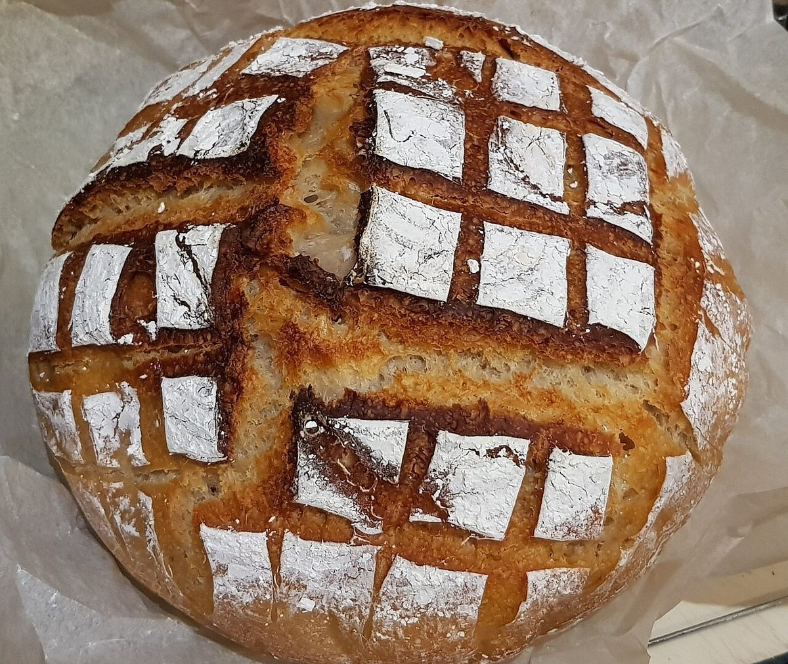
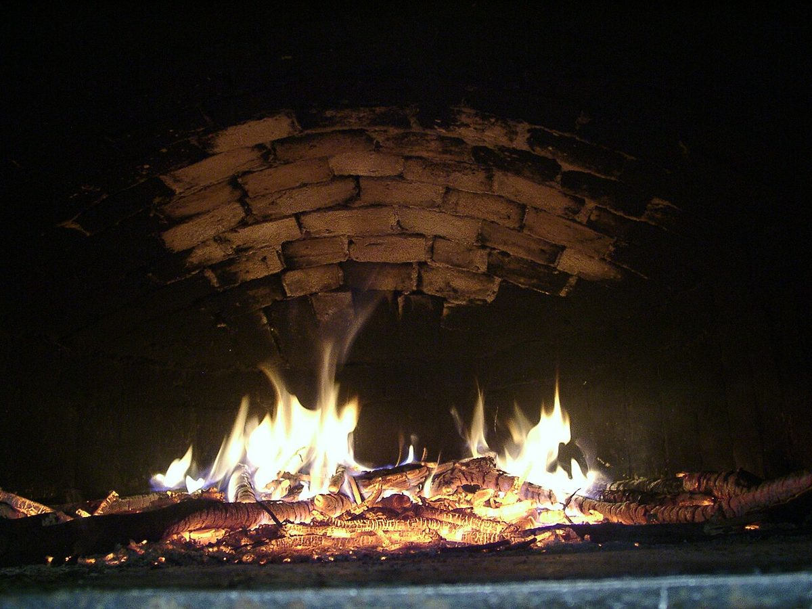
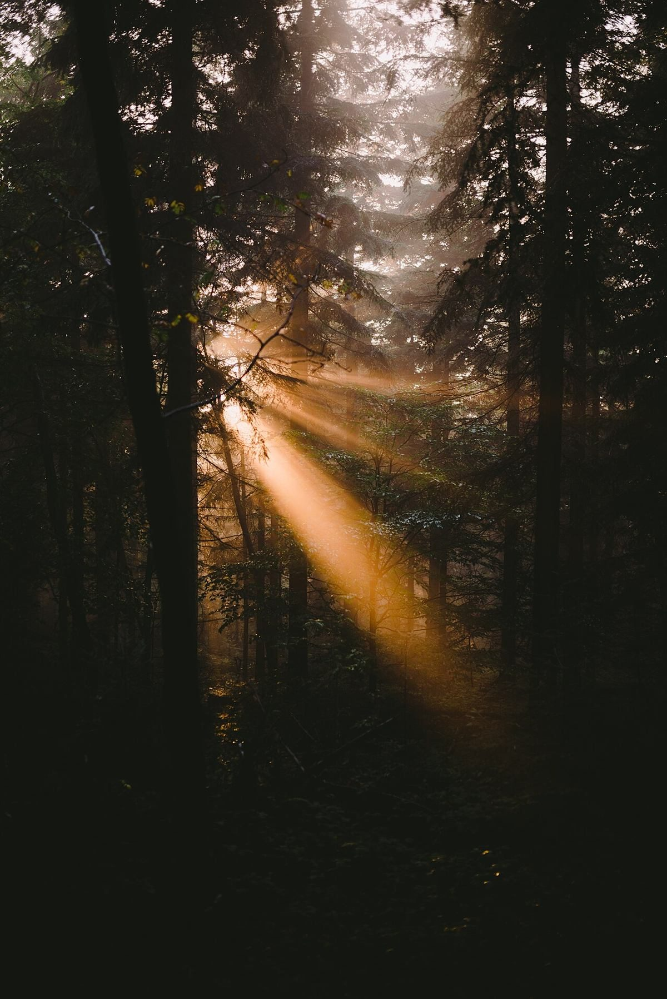
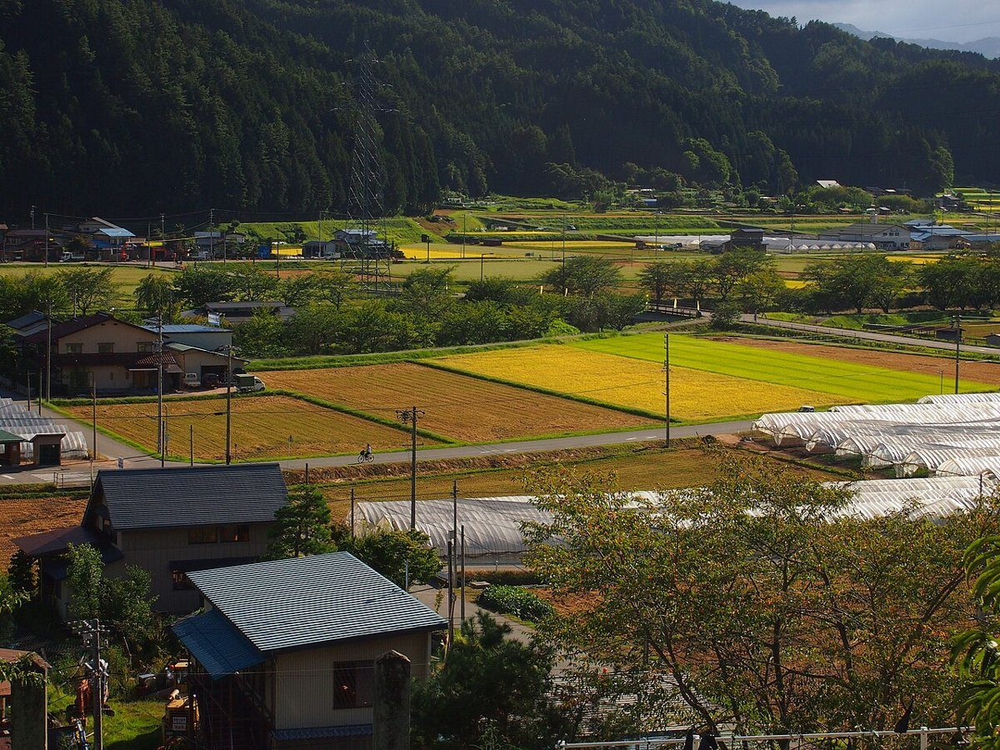

ちいさな石窯ぱん工房 えん
奈良県桜井市初瀬の、小さな石窯のパン工房
SAMPLE 営業用サンプルこのページは制作見本です。実在する店舗の公式サイトではありません。
制作側の案
火が落ちたあとの、
火が落ちたあとの、
やわらかな余熱のように
石窯の火と焼き色、そして奈良の山里の静けさ。このサンプルサイトは、その二つを重ねて「窯の中の暗がりと、ぬくもりの色」で組み立てました。
ここに書いているコンセプトはお店の考えではなく、制作側が提案するデザイン案です。お店の想いや大切にしていることは、ご相談のうえで置き換えます。

焼き色のイメージ


こんがり、じんわり、小麦の色


写真はすべてイメージです。

お問い合わせ
商品・営業時間・ご予約などは準備中です。お電話またはInstagramからお気軽にどうぞ。
掲載写真はフリー素材のイメージ写真です。店舗の実際の商品・店内・周辺ではありません。他地域で撮影されたものや撮影地が不明なものを含みます。